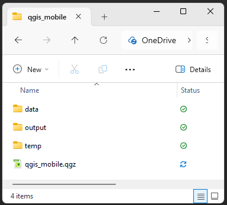

QGIS: Fieldwork Data Collection
Setup
This is an intermediate level tutorial. Before completing this tutorial, we recommend our QGIS: Introduction to Mapping tutorial. This tutorial is designed for QGIS 3.40. If you need to install it on your computer, go to the QGIS website.
We will start as always by creating a good folder structure to work within. This folder is where our project, our data, and creations will live. Folder structure is very important for keeping your data tidy, as well as for ease of sharing your project with others. You simply need to zip the project folder if you need to share the whole thing.
Open QGIS and create a new project with
Project > New.Let’s now save our project:
Project > Save.Create a new folder, let’s call it “qgis_fieldwork”.
Inside that folder, create these folders:
“data” - for all the data we will use to make our maps, split into:
“raw” - raw data from your research or the internet
“processed” - any data you’ve modified
“output” - for any maps or images we export
“DCIM” - this is a new one, it’s for storing images from our phone!
“UQ_Fieldwork” - this is also new, it’s for exporting our project to QField
Finally, let’s save our .qgz project file here, named “qgis_fieldwork_map.qgz”
Your .qgz file should always be in the highest level folder, so it’s only looking down into folders for data, not back out.

This might seem unnecessary now, but things quickly get out of control and hard to find if you don’t have a good folder structure.
Install QField
QField plugs directly in to QGIS, and allows you to link a QGIS project with your mobile phone for data collection.
For Avenza Maps you just need to add a GeoPDF and you can collect data on it. It’s less functional than QField, but it’s a great fallback tool. Android Download iOS Download
There are alternatives out there, such as Input (MerginMaps).
Download Data
Our data for today is packaged in a zip file.
- Download today’s data from here.
- Extract/unzip the data and move it into your raw data folder
Data Sources
We’re going to explore a number of different online spatial data repositories.
DEM
A Digital Elevation Model (DEM) is a common example of raster data, i.e. grid data that contains a value in each cell (a bit like the pixels in a coloured picture).
For this tutorial, we are using a DEM sourced from ELVIS - Geoscience Australia’s ELeVation Information System.
Aerial Imagery
There are a few places you can acquire aerial photography.
Local Raster Files
As a UQ student, you have access to very high resolution imagery from NearMap. You can activate an account here to download georeferenced aerial imagery. You can even access an array of imagery going back in time to around 2010.
We won’t use NearMap today, but you’re welcome to explore it.
Mapserver Raster Files
Today we’re going to use a World Imagery XYZ Tile from ESRI.
- Scroll down the
Browserpanel until your see XYZ Tiles - Right click XYZ Tiles and select
New Connection...- In
Nametype ESRI World Imagery - In
URLpaste:
https://server.arcgisonline.com/ArcGIS/rest/services/World_Imagery/MapServer/tile/{z}/{y}/{x} - Increase the Max. Zoom Level to 20
- This value depends on what is available from the given service in different parts of the world. Increasing that value beyond 20 for this map in Brisbane will show “Map data not yet available” when you zoom in very close.
- Click
OK
- In
- In the
Browserpanel, expandXYZ Tilesand double click onESRI World Imagery
Lot Plans
You can access a wide variety of QLD Government Data, including Spatial Data such as lot plans and vegetation maps, from QLD Spatial.
Today we have extracted a selection from Property boundaries Queensland
There are three ways to access data from QSpatial.
Import Data
Our data should neatly appear within the Project Home folder within the Browser panel.
Open the Data and Raw Data folder
Drag in the UQ_DEM_1m.tif and St_Lucia_Property_Boundaries.gpkg
Buffer Data
Buffers are a simple, but powerful, tool that we can use to extend the borders of our vector data. It’s useful for polygons, lines, and points.
Perhaps we need to keep 10m from the property boundaries when doing our fieldwork. A buffer can help us there.
However, our St_Lucia_Property_Boundaries layer has some issues we need to resolve before we can buffer it.
It has extra properties that we don’t need
A buffer on a polygon will grow out from the edges, not put a buffer either side of the edges
It’s in a Geographic Coordinate System
Let’s look at what happens if we create a buffer in a Geographic Coordinate System:
Go to
Vector > Geoprocessing Tools > BufferChoose “St_Lucia_Property_Boundaries” as the Input Layer
We next want to choose distance that we want to create a buffer away from our vector.
- However, you’ll note that because the layer projection is EPSG:4283 GDA94 (a geographic coordinate system), the distance is currently in degrees.
If you click Run with 10 Degrees, your buffer will be nearly the size of Queensland.
- To change this to metres, we first need to convert our layer to a local projected coordinate system.
Select and Reproject
We can Select the data we want, and reproject at the same time!
We first need to select the lots that are relevant to us:
Click the dropdown next to the Select Feature(s) icon in the toolbar, and choose the
Select Feature by polygonoption- This allows us to click around our desired selection
Make sure St_Lucia_Property_Boundaries is the selected layer in the
LayerspanelClick around the lots to draw a shape around the lots we want to keep
Right-click to finish selecting
- If you need to select any more features, press and hold Shift while drawing around your extra features, when you right-click they will be added to your selection
- To remove any accidentally selected features from the selection, press and hold Control and draw around the unwanted features.
Right click on the St_Lucia_Property_Boundaries layer, and select
Export > Save Selected Features As...Choose Geopackage as the
FormatClick the three dots on the right of
File name, navigate to your Processed data folder and save it as “UQ_Boundary”See the
Layer nameto “UQ Boundary”- The Layer name can have spaces in it, but it’s best to avoid spaces in a File name
Make sure you change the CRS, effectively reprojecting the layer
- Choose
EPSG:23856 - GDA94 / MGA zone 56- This is the same projection as our DEM, and a good local projection
- Choose
Click
OK
Polygons to Lines
To buffer either side of the edges of our boundaries, we need to convert them from Polygons to Lines.
- Go to
Vector > Geometry Tools > Polygons to Lines - Set the
Input Layerto UQ Boundary - Click
OK
Buffer the Lines
Go to
Vector > Geoprocessing Tools > BufferChoose “Lines” as the
Input LayerSet the
Distanceto 10 metres- We can also make the buffer squared if we want, but we will keep it with the rounded default
Tick the
Dissolve resultbox- This will merge the polygons from our output, making for a cleaner look. The Dissolve tool also exists as a standalone tool.
Click the three dots
...next to the Buffered field, navigate to the project’s processed data folder, and type in UQ_Boundary_Buffer and clickSaveClick
Run
Explore Projections
Hopefully it’s clear why we needed to convert from a Geographic Coordinate System to a Projected Coordinate System, but why is it important that we chose the local projection EPSG:23856 - GDA94 / MGA zone 56?
Let’s see what would happen if we did our buffer on those lines in a different projection.
Reproject Data
Go to
Vector > Data Management Tools > Reproject Layer...Choose the Lines in
Input layerSet the Target CRS to
EPSG:3857 - WGS84 / Pseudo-Mercator- This is a very common projection that Google and your phones use
Click
Run- We don’t need to permanently save this, so we can leave it as a temporary layer
Buffer Reprojected Lines
Go to
Vector > Geoprocessing Tools > BufferChoose “Reprojected” as the
Input LayerSet the
Distanceto 10 metresClick
Run
Move the new Buffered layer order so that it draws over the UQ_Boundar_Buffer layer. Notice anything interesting?
The new Buffered layer is about 1m smaller!
This is because EPSG:3857 - WGS84 / Pseudo-Mercator is a global projection that tries to preserve shapes. Although the units are in metres, the scaling factor changes as you move away from the equator to account for the curvature of the Earth.
It can still be useful to use this projection to take points. But you have to be careful when you’re making measurements and calculations, for those, a local projection is usually better.
Style the Boundary buffer polygon
- Open the
Layer Stylingpanel by pressing F7 (or fn+F7) - Select the UQ_Boundar_Buffer layer from either the
Layer Stylingpanel, or theLayerspanel. - Under
Fill, clickSimple Fill- Click the dropdown next to
Fill colorand select a colour that reminds us not to go there, like orange- Change the
Opacityto something around 30%
- Change the
- Click the dropdown next to
Save your project
It’s not essential at this stage, it’s just a good reminder to save your work regularly so you don’t lose things when things go wrong.
Hillshade
Adding a hillshade makes your visualisation of elevation more readable and visually pleasing by giving an artificial lighting look to your map.
- Go to
Raster > Analysis > Hillshade.... - Ensure the Input Layer is your clipped DEM “St_Lucia_DEM”
- Scroll down to “Hillshade” and click “…” next to
Create Temporary Layer, then “Save to file”, and save it as UQ_Hillshade to your project folder. - Click Run
DEM symbology
We can style our DEM with a terrain colour palette:
- double-click on the clipped DEM layer
- go to the “
Symbology” tab - change the Render type to “Singleband pseudocolor”
- by default, it uses the min/max values, which is what we want
- we can change the “Color ramp” to something more suitable with the drop-down menu and
Create new color ramp... > Catalog: cpt-city > Topography > Elevation, for example. - go to the “
Transparency” tab - Set the Global Opacity to 50%
- Click
OK
Let’s link these two together.
- Hold
Ctrland select both the Hillshade and the DEM layers - Press the
Add Groupbutton from the top of theLayerspanel - Call it DEM
- Make sure the DEM is above the Hillshade within this group
Contours
Adding a contour makes your elevation even more evident and can also be used to quickly show elevation on other layers
- Go to
Raster > Extraction > Contour.... - Ensure the Input Layer is your clipped DEM “St_Lucia_DEM”
- For Interval between contour lines, the default is 10 m, which won’t be greatly noticeable at UQ where the highest point is 25 m. However, the finer the contour lines, the longer it will take to process. I will choose 5 m.
- Scroll down to “Contours” and click “…” next to [Create Temporary Layer]“, then”Save to file”, and save it as UQ_Contours_5m to your project folder.
- Click Run
Layer for Data Collection
This is a very important step, as you cannot create new layers in QField, so we need this to record the data we collect.
- Go to
Layer > Create Layer > New GeoPackage Layer... - Click the three dots
...next to the Database field, navigate to the project’s processed data folder, and type in collected_data and clickSave - For
Geometry typechoose MultiPoint - Set the CRS to
EPSG:4326 - WGS 84 - Under New Field we will add our layer attributes:
- Let’s call the point name “ID”
Name: IDType: Text (string)- Click
Add to Fields List
- Description
Name: DescriptionType: Text (string)- Click
Add to Fields List
- Category
Name: CategoryType: Text (string)- Click
Add to Fields List
- Date and Time
Name: DateTimeType: Date & Time- Click
Add to Fields List
- Latitude
Name: LatType: Decimal (double)- Click
Add to Fields List
- Longtitude
Name: LongType: Decimal (double)- Click
Add to Fields List
- Click
OK
You might wonder why we’ve just chosen WGS84 after seeing the issues with it earlier. Placing points with this projection is less of an issue than doing measurements and analysis. For today we’re choosing WGS84 so that our Lat and Long values are in a format most people expect: WGS84. If we chose a Projected Coordinate System, it wouldn’t give us location in degrees Lat: -27.4705, Lon: 153.0260, it would give us a location meters Easting: 500,000 Northing: 6,900,000 We could choose a local Geographic Coordinate System like EPSG:7844 - GDA2020, but again, most people will assume your values are in EPSG:4326 - WGS 84, so that’s a safe bet unless your group/company has a preferred option.
Always check and transform to a common CRS before analysis.
Add Another Field
It would be nice to be able to take photos when we collect our data, let’s add another field.
- Double click on the new fieldwork_data layer
- Click on the
Fieldstab - Click the yellow pencil button to Toggle Editing Mode
- Click the now visible yellow New field button
Name: PhotoType: Text (string)- Click
OK
- Click the yellow pencil button to Toggle Editing Mode
- Click
Save - Click
OK
Attributes Form Preparation
Now that we have a layer with all the desired fields, we can now edit the layer form to customise how things are entered.
- Double click on the new collected_data layer
- Click on the
Attributes Formtab - At the very top of the window, click
Autogenerateand change it toDrag and Drop Designer
On the left you will see all of our Fields, we can drag and drop these into the Form Layout section - this section lays out how our form will look when we enter new data.
Drag and Drop the Photo Field to the
Form Layoutso that it is sitting above DateTimeClick fid and press the red minus button - we want to keep the field, but don’t need to see this in our form
Click ID
- Under Constraints tick
Not NullandEnforce not null constraint - We don’t need to change anything else for ID, we just want to make it mandatory
- Under Constraints tick
Click Category
- Under Widget Type click
Text Editand change it toValue Map - Add the following to
ValuesandDescriptions:EXandExcellentGDandGoodPRandPoorOTandOther- It is good practice to have an Other field if you’re using a “Not Null” constraint, as it allows the user to note when something doesn’t meet the given Categories.
- Under Constraints tick
Not NullandEnforce not null constraint
- Under Widget Type click
Click Photo
- Under Widget Type click
Text Editand change it toAttachment - Under Path change
Default pathto @project_home + ‘/DCIM’- Change
Absolute PathtoRelative to Project Path
- Change
- Tick **Use a hyperlink for document path (read-only)
- Under Integrated Document Viewer change Type from
No ContenttoImage
- Under Widget Type click
Click DateTime
- Under General untick
Editable- we don’t want to edit this field - Scroll to the bottom, under Defaults change the
Default valueto $now - If this worked, there will be a date and time next to
Preview
- Under General untick
Click Lat
- Under General untick
Editable- we don’t want to edit this field - Scroll to the bottom, under Defaults change the
Default valueto $y - The
Previewwill show NULL, but that’s okay, we don’t have data yet
- Under General untick
Click Long - Under General untick
Editable- we don’t want to edit this field - Scroll to the bottom, under Defaults change theDefault valueto $x
Click
OK
We should now have a functional form, let’s test it in QGIS before we send it to our phones
- Click the yellow pencil button to Toggle Editing on
- Click the green dots (or press Ctrl + .) to Add Point Feature
- Click on the map to add a point
- The Name should be mandatory, the Description editable, Photo have an add option, DateTime should have the current date and time, and Lat and Long should have numbers like “-27.494066205142065” and “153.0153703956312”
- Click
Cancel - Click the yellow pencil button to Toggle Editing off
Tracks Layer
This is another important step, as you need to create your tracking layer before you export to QField
- Go to
Layer > Create Layer > New GeoPackage Layer... - Click the three dots
...next to the Database field, navigate to the project’s processed data folder, and type in tracks and clickSave - For
Geometry typechoose MultiLine - Set the CRS to
EPSG:23856 - GDA94 / MGA zone 56 - Under New Field we will add just one layer attribute:
- Let’s call the point name “DateTime”
Name: DateTimeType: Date & Time- Click
Add to Fields List
Tracks Attributes Form Preparation
Let’s prepare the tracks DateTime as we did with the collected_data - Double click on the new tracks layer - Click on the Attributes Form tab - At the very top of the window, click Autogenerate and change it to Drag and Drop Designer
On the left you will see all of our Fields, we can drag and drop these into the Form Layout section - this section lays out how our form will look when we enter new data.
- Click fid and press the red minus button - we want to keep the field, but don’t need to see this in our form
- Click DateTime
- Under General untick
Editable- we don’t want to edit this field - Scroll to the bottom, under Defaults change the
Default valueto $now - If this worked, there will be a date and time next to
Preview
- Under General untick
- Click
OK
QField
We’re ready to export our project to QField.
Install QField Plugin
- Navigate to
Plugins > Manage and Install Plugins... - Search for “QField”
- Click on QField Sync
- Click
Install Plugin - Once it has installed, click
Close
You can now access the QField Sync Plugin through the menu.
Prepare Data for QField
At this point we need to clean up our Layers. You don’t have to remove everything, but it’s worth deciding what layers you want to remove, and what scratch layers you want to make permanent.
Hide any layers you want to keep, but don’t want to export to QField
Make sure your layer order makes sense, I recommend the following layers visible in this order:
- collected_data
- tracks
- UQ_Boundary_Buffer
- UQ_Contours_5m
- UQ_DEM_1m
- UQ_Hillshade
- World Imagery Tile
Export to QField
- Navigate to
Plugins > QFieldSync > Package for QField - If you get a Message window popup, click
Next - Give your project an appropriate title UQ_Fieldwork
- Under Packaged Project Filename navigate to your UQ_Fieldwork folder and click
Save - Under Advanced untick every folder except
DCIM- We want a copy of this folder for our photos to be saved to. The rest of our data will be packaged into the QField folder.
- At the bottom of the window click
Configure current project...- Click the
Cable Exporttab (if we were using QFieldCloud, we would click that option now instead) - Click the
Toggle Layerseye symbol on the right- In the
Actioncolumn changeCopytoRemove from projectfor any layers you don’t want to copy to QField.
- In the
- Scroll down and tick Geofencing
- Set
Geofencing areas layerto UQ_Boundary_Buffer
- Set
- Click
OK
- Click the
- Click
Create
We now need to zip the QField folder and send it to our phone!
- Navigate to your Project folder, right click on the UQ_Fieldwork folder and compress it to a zip file.
- Send this file to your phone via email, cloud, or using a cable.
Opening the QField Project
Android - Open QField - Skip any popups - Tap Open local file - Tap the green plus button in the bottom right - Tap Import project from ZIP - Navigate to your zip file. In my case, I had to go to the top left menu, and tap on Downloads - The file should open in QField. You may need to tap on the outer folder, and then the Project itself.
iOS - Open the zip file and extract it to: On My iPhone/QField/Imported Projects - Open QField - Skip any popups - Tap Open local file - Tap Imported projects - Open the UQ_Fieldwork folder until you reach the UQ_Fieldwork Project file. - The project should open in QField.
You can now access your map.
Using QField
- Tap the menu in the top right to see your layers.
- Tap the eye to hide or unhide layers
- If you tap on a layer, and then tap the pencil icon in the bottom right, you can edit a layer.
- Let’s do this for our data_collected layer
- Tap on the map on the right to return to the map, your cursor will now be a cross-hair
- Navigate around and then press the green + button to add a point
- Fill out the details, and then tap the tick in the top left.
- You’ve collected data!
Turning on Tracks
- Tap the menu in the top right to see your layers.
- Press and hold on your Tracks layer
- When the new menu appears, tap
Setup tracking - Here you can choose the interval for when a new point will be placed for your tracks
- As we’re inside and may not move much, turn on
Time requirementand set a shortMinimum timeof 15 seconds - Tap
Start tracking
- As we’re inside and may not move much, turn on
- If you have your phone’s GPS on, and you zoom in on yourself, your should see a tracking line appear.
- When the new menu appears, tap
Turning off Tracks
- Press and hold on your Tracks layer
- When the new menu appears, tap
Stop tracking
- When the new menu appears, tap
To export your data back to QGIS, you can either copy the whole project folder in your phones storage back to your computer, or:
- Go to the menu
- Tap the folder with a cog on it
- Tap the three dots next to your data_collected.gpkg file
- Send it to your email
There’s more to explore, such as the very very helpful QFieldCloud, and I encourage you to do so.
If you have any questions, reach out to the UQ Library Training Team at training@library.uq.edu.au
Feedback
Please visit our website to provide feedback and find upcoming training courses we have on offer.
Stretch Goals
Exporting to Avenza Maps
Click on Show Layout Manager in the toolbar or use Project > Layout Manager. Create a new layout called “Avenza”. We can now see the Layout window.
Normally we would add many elements to our layout if we were exporting it for print such as the map, a legend, a scale bar, a north arrow…
In this case however, we are simply interested in our map. Let’s add the map to the canvas:
- Go to the Layout tab, scroll down to ‘Resize Layout to Content’, click ‘Resize layout’
- Before we export, let’s turn off any layers we aren’t using in QGIS to save space
- Click the Refresh View button up the top
- Now we are ready to export.
- Go to ‘Layout > Export as PDF…’ and save your map.
- The ‘PDF Export Options’ window will open
- Tick the ‘Create Geospatial PDF (GeoPDF)’ box
- Click ‘Save’
You can repeat this process with the DEM and Hillshade to export out another kind of map.
Now you simply need to export the pdf file(s) to your phone. You can email it, send it through the cloud, or transfer it using a cable.
When you first open Avenza Maps it will ask you to create an account, but you can import up to three maps without doing so, you can avoid creating an account by selecting the ‘x’ in the top right corner. * Allow Avenza Maps to access your device location * Select the orange ‘+’ in the bottom right and select ‘Download or import a map’ * Choose ‘From Storage Locations’ (if requested, give Avenza Maps the permissions to access your files) * Do the same for the other map, if you created one. * Once it has been imported, tap on the map. * You can now move the map around with your finger, and pinching to zoom. * Tapping the placemark icon in the bottom left will add a placemark in the middle of the crosshairs. * Tapping the 3 dots in the bottom right will allow you to add GPS tracking and draw and measure distances.
AutoID
We can use some fancy code to make the ID automated
- Double click on the new collected_data layer
- Click on the
Attributes Formtab - Click ID
- Under General untick
Editable- we don’t want to edit an automated field - Under Defaults click the
Expression Builderbutton- Paste in this code:
- Under General untick
- Click on the
concat(
"cat",
'-',
lpad(
to_string(
coalesce(
aggregate(
'DataCollection', -- layer name
'max', -- aggregate function
to_int(
regexp_substr("ID", '\\d+')
), -- numeric part of auto_id
"cat" = attribute(@parent, 'cat')
) + 1,
1
)
),
3,
'0'
)
)